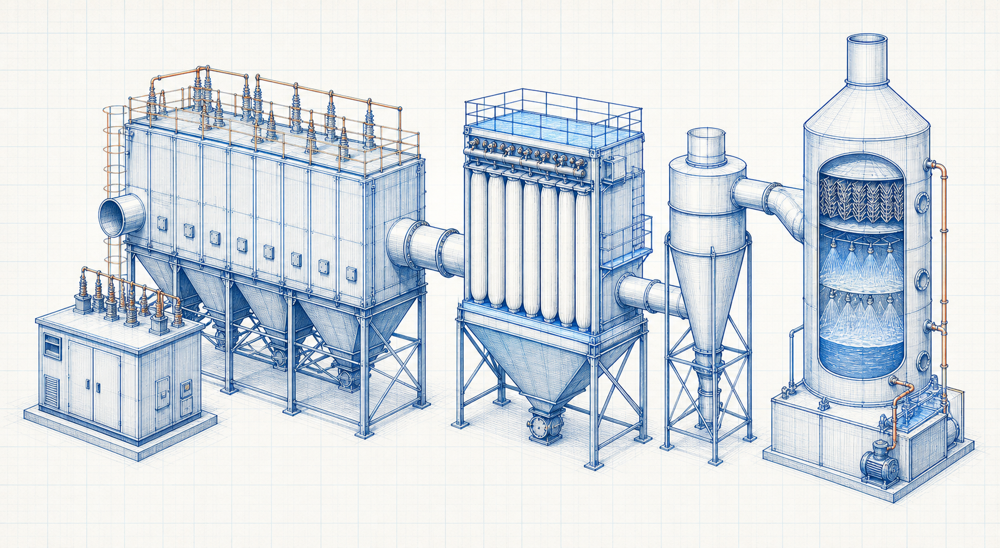

Equipment guide
Bag Filter: Working Principle, Components, Types and Applications
A bag filter is a fabric-filtration device that removes particulate matter from a gas stream. Its performance depends on gas distribution, filter media, air-to-cloth ratio, cleaning method, dust properties, pressure drop and discharge reliability.

- Content type
- Equipment guide
- Level
- Industrial Equipment › Air Pollution Control Equipment › Bag Filters › Baghouse Sections › Bag Filter
- Audience
- Student · Design engineer · Project engineer · Plant engineer
- Last reviewed
- 30 August 2026
What Is a Bag Filter?
A bag filter, also called a baghouse or fabric filter, contains filter media that retain particles while gas passes through. A controlled cleaning cycle removes accumulated dust cake so the filter can continue operating.
Purpose and Plant Location
Bag filters are normally placed downstream of a capture and duct system or process gas source, upstream of the induced-draft fan or stack depending on the system arrangement. The hopper and discharge system form part of the operating boundary.
Working Principle
Particles are collected on and within the filter media. The dust cake can contribute to filtration performance but also increases pressure drop. Cleaning must remove enough material to maintain flow without damaging the media or releasing unacceptable emissions.
Main Components and Their Functions
- Filter bags and media
- Provide the filtration surface and must match temperature, chemistry and dust characteristics.
- Cages and tube sheet
- Support bags and separate clean-gas and dirty-gas plenum regions.
- Cleaning system
- Pulse-jet, reverse-air or mechanical system that restores gas flow through the bags.
- Hopper and discharge
- Collect and remove dust to prevent accumulation and re-entrainment.
Equipment Diagram
Types and Configurations
- Pulse-jet bag filters with compressed-air cleaning.
- Reverse-air or shaker-cleaned fabric filters.
- Compartment and modular configurations for different access and cleaning strategies.
Main Operating Parameters
- Gas flow, temperature, moisture and chemical composition.
- Dust concentration, particle size, stickiness, abrasiveness and explosibility.
- Air-to-cloth ratio, pressure drop and cleaning-cycle controls.
- Hopper discharge rate and compressed-air utility quality where applicable.
Materials of Construction
Filter-media and cage materials are selected for gas temperature, chemical compatibility, abrasion, moisture, dust characteristics and cleaning method. Housing, hopper, duct and insulation materials require their own corrosion and structural evaluation.
Selection Inputs and Engineering Considerations
- Define gas flow, pollutant loading and required collection objective.
- Establish dust and gas characteristics, including temperature excursions and moisture risk.
- Choose media, cleaning method and compartment arrangement suitable for the service.
- Evaluate pressure drop, fan duty, hopper discharge, fire/explosion and maintenance interfaces.
- Confirm performance guarantees and operational limits with qualified suppliers and project specifications.
Installation and Process Interfaces
The bag filter interfaces with upstream ductwork or process equipment, fan location, compressed-air supply, hopper discharge equipment, ash/dust conveying, isolation dampers and monitoring. Access for bags, cages and cleaning components is a necessary layout input.
Operation Fundamentals
Control gas flow and cleaning so pressure drop remains within the equipment’s approved operating range. Keep the dust discharge system available; a functioning filter cannot compensate for a blocked hopper or failed downstream conveyor.
Common Problems, Failure Modes and Causes
- High pressure drop from excessive cake, failed cleaning, wet material or restricted discharge.
- Bag damage from temperature excursion, abrasion, chemical attack or installation defects.
- Dust re-entrainment from poor hopper evacuation or gas distribution.
- Leakage or bypass caused by damaged bags, seals or tube-sheet interfaces.
Inspection and Maintenance Basics
- Trend differential pressure, cleaning demand and emissions indicators.
- Inspect bags, cages, pulse valves, manifolds, tube sheets and hopper discharge equipment.
- Investigate abnormal dust carryover, leaks or pressure-drop change promptly.
- Follow approved lockout, confined-space and combustible-dust safety procedures.
Applications by Industry
- Dust collection in cement, power, steel and mineral handling.
- Process particulate control in chemical and food-related applications where suitable.
- Material-transfer, crushing, grinding and conveying ventilation.
- Boiler and furnace particulate collection with service-appropriate media.
Frequently Asked Questions
What creates pressure drop in a bag filter?
Gas resistance through the media and accumulated dust cake, plus system components, create pressure drop.
Can every dust use the same filter media?
No. Temperature, chemistry, moisture, abrasiveness, release behaviour and safety characteristics affect media selection.
Why is hopper discharge important?
Accumulated dust can obstruct flow, re-entrain into gas, overload equipment or create operational and safety problems.
References
- Cooper, C. D. and Alley, F. C. Air Pollution Control: A Design Approach. 4th ed. Waveland Press. 2011.
- de Nevers, N. Air Pollution Control Engineering. 3rd ed. Waveland Press. 2017.
This page is an original educational summary. It does not reproduce protected book text, tables, figures or standards material.